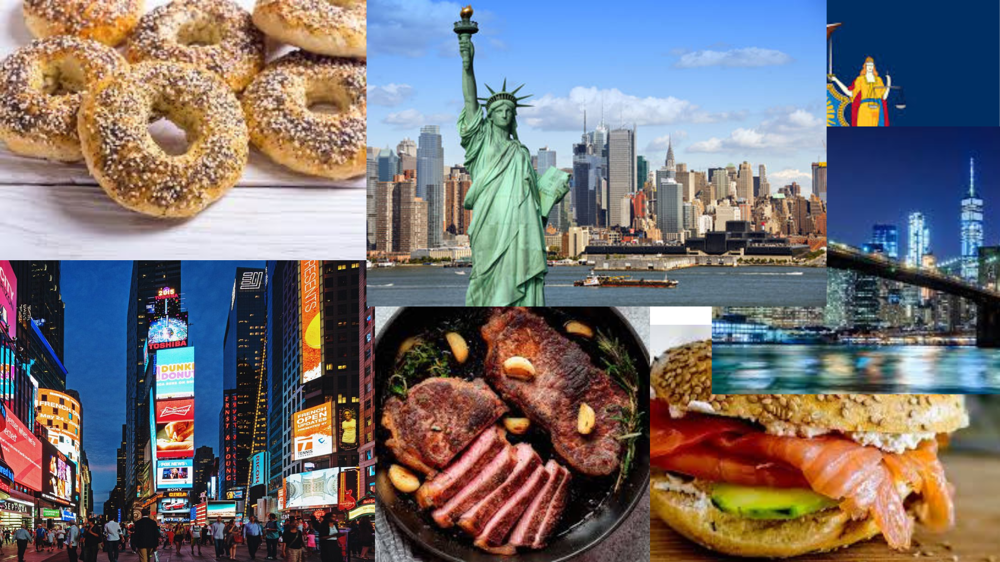

Introduction
New York is a global hub of finance, culture, and entertainment, known as the "Big Apple" and a symbol of American opportunity. The city is a dynamic metropolis defined by its iconic skyline, diverse population, and fast-paced energy, with landmarks like the Statue of Liberty and Central Park, and influential global institutions. Whether focusing on the state's rich history, including its role as a former capital, or the city's cultural and financial importance, New York offers a compelling subject for an article.
-

More about New York
There are many cities in the world, but none is quite like New York City. One of the things that distinguishes it from other cities is its diversity. New York is an amazing melting pot, a place where people of every race, religion, culture, and lifestyle gather. Over eight million people live in this giant city, which constantly thrives with the energy of its residents. New York City offers something for everyone, from the beautiful and historic streets of Greenwich Village to the bright lights of Broadway. It is a city that is a great place to visit in the spring, summer, winter, or fall. In the following sections, you will be able to explore everything the city has to offer, from transportation options to finding out about things you can see and do once you arrive. New York is a city geared for walking, so take every opportunity to set out on foot to explore attractions, shopping, and dining. Try to visit some of the beautiful parks for a change of pace, and do not forget to explore some of the diverse neighborhoods that are packed with stores, restaurants, and a variety of people to watch. If the city becomes overwhelming, take time to treat yourself to a side trip out of the city for some peace and quiet.
The island of Manhattan was purchased for beads worth $24 from the Indians. Despite this costly beginning, New York City has been one of the great centers of the arts and culture in the United States. In 1624, it began as New Amsterdam, a Dutch commercial settlement, and transitioned into a British colony in 1664. New York was named in honor of the Duke of York, who was granted the territory by his brother, England's Charles II. It remained a British stronghold until dispossessed following the war of independence. At the end of the 18th century and through the first half of the 19th, New York was the capital city of the United States. The southern tip of Manhattan Island and part of what was Long Island belonged to the city of New York since the beginning. However, Brooklyn was entirely autonomous. Two other cities of Long Island - Jamaica, which was Dutch territory until 1664, and Flushing were autonomous but made relatively routine visits to the British Governor to pay their tribute. The present-day borough of Bronx was apparently a sleepy hollow. The borough of Queens was a separate British colony known first as Nassau County, which then became a part of the borough of Queens. The Dutch territories of Staten Island were ruled by the Dutch West India Company. The colony fell to the British in 1664, who then lost both the city of New York and the rest of New York to the Dutch from 1673 to 1674. In 1674, the Dutch traded with the English for the territories of New Netherlands, and the name was subsequently changed in 1674 to New York in honor of the Duke of York, who later reigned as England's James II.
New York City is known as one of the most culturally diverse cities in America. Unique neighborhoods, foods, and people are a testament to the varied lifestyles and ethnic cultures that are in abundance. Without question, all of these attributes contribute to making the Big Apple one of the greatest, most diverse cities in which to live, work, and play. The following are just a couple of the many examples that pay homage to the diverse cultures that New York City has to offer. One of the earliest and most widely known European cultural groups to settle in New York City was the Dutch. In the early 17th century, the Dutch formed the main population of New Amsterdam, now known as New York City. When the English took control of the city in 1664, New York City quickly became the seat of cultural leaders. Taking over from the Dutch, the English provided New York with a well-formed base for their language and established the city as a center for the arts, religion, and education. No enclaves or great numbers of native Dutch New Yorkers exist today with names like Schenectady or Catskill, but the Dutch have left behind an appreciation for imported cheeses, cookies, art, and even tulips. Besides some of the other interesting things to do while in New York, the Dutch have an impact on the city's cultural palaces, the most prominent of all being a 74-acre park in the heart of Manhattan dotted with fountains, gardens, and a respite – Central Park.